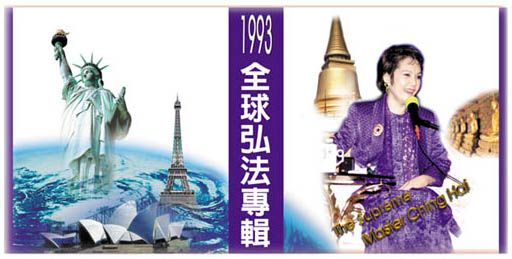

| 
|
La version chinoise nouvellement publiée de "La tournée mondiale de conférences de Maître Suprême Ching Hai en 1993" est maintenant disponible !
|
Pour la première fois depuis la publication de la collection "La Clé de l'illumination immédiate", une nouvelle collection de livres est maintenant disponible. Cette collection nous apporte l'inspiration de la vie de Maître et de Ses enseignements. Elle retrace Son étonnant voyage à travers 24 villes sur simplement une période de 3 mois, cette collection de six volumes contient les 28 conférences et des interviews choisis données par Maître Suprême Ching Hai lors de Son inoubliable tournée mondiale de conférences en 1993.
Comme d'autres livres qui transmettent des idées nobles ou des philosophies, cette collection apporte plus qu'un ensemble de concepts mentaux. En tant que Maître vivant, le Maître Suprême Ching Hai a dédié Sa vie à nous aider à retrouver la noblesse de notre vrai Soi. Cette collection de six livres offre encore un aperçu du message qu'Elle partage avec tant d'amour avec toutes les personnes de divers horizons et dans le monde entier. Ses paroles illuminent l'âme, révélant des bijoux d'une valeur incommensurable. A chaque fois que vous avez besoin d'un rappel de l'amour, de la compassion et de la sagesse de Dieu, vous n'avez qu'à tourner une page pour accéder à ces trésors encore et encore.